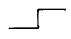
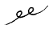
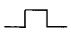
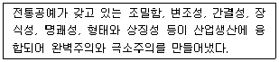
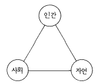
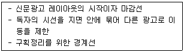
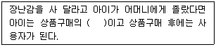

시각디자인산업기사 (2004-03-07 기출문제)
1과목: 색채학
1. 우리 눈의 시세포 중에서 색의 지각이 아닌 흑색, 회색, 백색의 명암만을 판단하는 시세포는?
- 추상체
- 간상체
- 수평세포
- 양극세포
(정답률: 알수없음)

2. 무채색에 관한 설명으로 틀린 것은?
- 색상과 채도는 없고 명도만을 갖는다.
- 채도가 거의 없는 것이지 전혀 없는 것은 아니다.
- 반사율 약 85%는 흰색,약 3~85%는 회색,약 3%는 검정이다.
- 무채색의 온도감은 중성색에 속한다.
(정답률: 알수없음)
3. 음식점 등 회전율이 빠른 업소의 실내에서 가장 적합한 색채는?
- 보라
- 주황
- 녹색
- 파랑
(정답률: 알수없음)
4. 다음 기업이나 단체에서 색채계획(Color policy)을 하는 과정을 설명한 것 중 순서가 옳은 것은?
- 색채심리분석 - 색채환경분석 - 색채전달계획 - 디자인의 적용
- 색채환경분석 - 색채심리분석 - 색채전달계획 - 디자인의 적용
- 색채전달계획 - 색채심리분석 - 색채환경분석 - 디자인의 적용
- 색채환경분석 - 색채전달계획 - 색채심리분석 - 디자인의 적용
(정답률: 알수없음)
5. 조화배색에 관한 설명 중 잘못된 것은?
- 대비조화는 다이나믹한 느낌을 준다.
- 동일 유사조화는 강렬한 느낌을 준다.
- 차이가 애매한 색끼리의 배색에서는 그 사이에 가는 띠를 넣으므로써 애매함을 해소할 수 있다.
- 보색배색은 대비조화를 가져온다.
(정답률: 알수없음)
6. 다음 중 같은 크기의 물건일 때 가장 크게 보이는 색은?
- 보라색
- 연두색
- 노랑색
- 남색
(정답률: 알수없음)
7. 감산혼합(감색혼합)에서 노랑과 빨강을 혼합하면 무슨 색이 되는가?
- 보라
- 연두
- 파랑
- 주황
(정답률: 알수없음)
8. 영· 헬름홀즈의 3원색설에 대하여 헤링은 4원색과 무엇을 가정하고 있는가?
- 무채색광
- 유채색광
- 녹색색광
- 황색색광
(정답률: 알수없음)
9. 색의 강약에 해당하는 것으로 색의 맑고 탁한 정도를 나타내는 용어는?
- 명도
- 채도
- 색상
- 휘도
(정답률: 알수없음)
10. 색명을 분류하는 방법으로 톤(tone)에 대한 설명 중 옳은 것은?
- 명도만을 포함하는 개념이다.
- 채도만을 포함하는 개념이다.
- 명도와 채도를 포함하는 복합 개념이다.
- 명도와 색상을 포함하는 복합 개념이다.
(정답률: 91%)
11. 우리 나라의 산업규격, 교육용으로 채택된 표색계는?
- 오스트발트
- 먼셀
- 헬름 홀쯔
- 헤링
(정답률: 알수없음)
12. 오스트발트표색계에서 기본이 되는 색채는?
- 검정,흰색,순색
- 색상,명도,채도
- 명청색,암청색,순색
- 빨강,검정,흰색
(정답률: 알수없음)
13. 색의 조합에 관한 설명 중 잘못된 것은?
- 보색의 조합은 강함, 원초적인 의미를 갖는다.
- 따뜻한 색끼리의 조합은 동적이며 따뜻하다.
- 채도가 높은 색과 낮은 색의 조합은 긴장감과 화려함을 준다.
- 높은 명도끼리의 조합은 강한 느낌을 준다.
(정답률: 알수없음)
14. 다음 색의 연상과 사용에 관한 설명 중 가장 잘못된 것은?
- 빨강, 주황 등은 식욕을 증진시키는 색이다.
- 파랑, 하늘색 등은 일반적으로 청결한 이미지이다.
- 금속색(주로 은회색 등)은 첨단적, 현대적이라는 이미지를 나타낸다.
- 검정색은 죽음, 공포, 암흑을 연상시키므로 공업제품의 색으로는 절대 사용치 않고 있다.
(정답률: 알수없음)
15. 다음 색채가 수반하는 일반적 연상 중 잘못된 것은?
- 적색 - 정열, 사랑, 혁명
- 청색 - 희열, 즐거움, 신선
- 녹색 - 청춘, 평화, 이상
- 노랑 - 명쾌, 발랄, 희망
(정답률: 알수없음)
16. 다음 보기 중 색채의 속도감에서 가장 둔한 느낌을 주는 색상은?
- 빨강색
- 청록색
- 노랑색
- 주황색
(정답률: 알수없음)
17. "M = O/C"는 미도를 나타내는 공식이다. C는 복잡성의 요소이다. O는 무엇을 나타내는 기호인가?
- 환경의 요소
- 색의 3요소
- 구성의 요소
- 질서성의 요소
(정답률: 알수없음)
18. 다음 중 색채조화에서 공통되는 원리가 아닌 것은?
- 균형의 원리
- 질서의 원리
- 비모호성의 원리
- 유사성의 원리
(정답률: 알수없음)
19. 여러 대비현상을 기술한 다음 내용 중 잘못된 것은?
- 같은 색이라도 면적이 큰 경우 더욱 밝고 선명하게 보이는 현상을 면적대비라고 한다.
- 어떤 두 색이 가까이 있을 때 그 경계 부분에서 나타나는 대비현상이 먼 곳보다 강하게 일어나는 것을 연변대비라고 한다.
- 서로 보색관계인 두 색이 있을 때 서로의 영향으로 색상이 달라보이는 현상을 보색대비라고 한다.
- 명도가 서로 다른 두 색이 있을 때 밝은 색은 더 밝게, 어두운 색은 더 어둡게 보이는 것을 명도대비라고 한다.
(정답률: 알수없음)
20. 색채계획 과정 중 색채전달 계획과 관련이 가장 적은 것은?
- 컬러 매뉴얼 작성
- 기업색채의 결정
- 색 재현의 코디네이트
- 기업의 이상상 책정
(정답률: 알수없음)
2과목: 인쇄 및 사진기법
21. 흑백의 연조, 중간조, 경조란 용어는 무엇의 구분인가?
- 감색성
- 콘트라스트
- 채도
- 관용도
(정답률: 알수없음)
22. 사진상에서 가장자리가 딱딱하고 어두운 그림자를 만드는 광선은?
- 한 방향으로의 확산광
- 흰벽에 반사된 광원
- 직사광선
- 소프트박스(soft box)를 장착한 조명
(정답률: 알수없음)
23. 사진제판에서 색분해 원고로 가장 좋은 것은?
- 원색 인쇄물
- 컬러 네거티브 필름
- 컬러 포지티브 필름
- 컬러 인화지
(정답률: 알수없음)
24. 스톱실린더 인쇄기와 관련있는 인쇄기는?
- 평압인쇄기
- 원압인쇄기
- 윤전인쇄기
- 오프셋평판인쇄기
(정답률: 알수없음)
25. 다음 중 별행으로 하시오 라는 교정부호와 가장 관련이 있는 것은?



(정답률: 알수없음)
26. 종이의 시험법 중 잉크나 물에 대한 종이의 침투 저항성을 지칭하는 것은?
- 백색도
- 흡유도
- 사이즈도
- 광택도
(정답률: 알수없음)
27. 박엽지의 종류가 아닌 것은?
- 인디아지
- 타자지
- 글래신지
- 골판지
(정답률: 알수없음)
28. 컬러 필름의 색재현은 감색법에 의한 원리이다. 이 때 사용되는 색의 3요소는?
- Red, Green, Black
- Yellow, Magenta, Cyan
- Yellow, Magenta, Blue
- Red, Green, Cyan
(정답률: 알수없음)
29. 반사를 제거하기 위하여 사용하는 필터는?
- 편광 필터
- 광량감소 필터
- 다영상 필터
- 색보정 필터
(정답률: 알수없음)
30. 색과는 관계없이 노출광량만을 조절하기 위한 중성회색 필터는?
- ND 필터
- UV 필터
- 편광 필터
- 스카이라이트 필터
(정답률: 알수없음)
31. 패닝(panning)에 대한 설명 중 틀린 것은?
- 동체의 움직임에 맞춰 카메라를 움직이면서 촬영하는 방법이다.
- 패닝을 할 수 있는 피사체는 카메라에 대해 90°각도로 이동하는 것이 좋다.
- 운동방향이 각기 다른 피사체의 움직임을 나타내는데 적절하다.
- 알맞는 흐름과 셔터 속도의 선택이 중요하다.
(정답률: 70%)
32. 사진을 인화한 후에 사진에 보존성을 높이거나 특별한 색감을 첨가하기 위하여 하는 작업은?
- 감력
- 감감
- 토닝
- 트리밍
(정답률: 알수없음)
33. 일반적인 공판 인쇄의 특징에 속하지 않는 것은?
- 잉크가 화선부를 통과해서 피인쇄체에 인쇄된다.
- 비화선부는 잉크가 통과하지 않는다.
- 타인쇄법보다 제판 비용이 저렴하며 마지널존 현상이 나타난다.
- 타인쇄에 비하여 잉크층이 두껍다.
(정답률: 알수없음)
34. 렌즈의 종류에서 인간의 시계감과 거의 같고 밝기가 가장 밝으며 해상력이 우수한 렌즈는?
- 마이크로 렌즈
- 시프트 렌즈
- 표준렌즈
- 반사망원 렌즈
(정답률: 알수없음)
35. 카메라를 사용하지 않고 투명체, 반투명체, 불투명체의 물체를 직접 인화지 위에 올려놓고 빛을 비추어서 생긴 그림자에 의해 구성되는 작품과 기법은?
- 포토그램
- 포토몽타주
- 디포메이션
- 솔라리제이션
(정답률: 알수없음)
36. 보통 흑백 필름의 인화용으로 사용되고 있는 가스라이트 인화지의 현상온도(℃)로 가장 적당한 것은?
- 13∼15℃
- 18∼20℃
- 23∼25℃
- 27∼30℃
(정답률: 알수없음)
37. 일반적으로 카메라 화면의 대각선 길이와 비슷한 초점거리를 가진 렌즈는?
- 망원렌즈
- 표준렌즈
- 광각렌즈
- 줌렌즈
(정답률: 알수없음)
38. 제책에 있어서 속장과 겉장을 연결하는 부분이며 속장의 내구력을 좌우하는 중요한 작업은?
- 접기
- 면지 붙이기
- 쪽 맞추기
- 등굳힘
(정답률: 알수없음)
39. 적외선 필름에 대해서 옳게 설명한 것은?
- 자연광하에 풍경을 촬영하면 푸른 하늘은 희게, 초록색 잎은 검게 나타난다.
- 적외선 필름은 촬영할 때 그린(Green)필터를 사용해야 한다.
- 초점을 일반 초점거리보다 약간 뒤에다 맞춰야 된다.
- 초점을 일반 초점거리보다 약간 앞에다 맞춰야 한다.
(정답률: 알수없음)
40. 판면의 화선부가 오목하게 패여 있는 부분에 잉크가 채워져 피인쇄체로 옮겨짐으로써 인쇄물의 색채가 매우 풍부하며 사진 인쇄에 적합한 인쇄 방식은?
- 콜로타이프 인쇄
- 스크린 인쇄
- 그라비어 인쇄
- 플렉소 인쇄
(정답률: 알수없음)
3과목: 시각디자인론
41. "순수한 조형적 표현은 선, 면, 색채의 관계에 의해 창조된다"며 이상적, 합리적, 조형세계를 역설한 화가는?
- 피카소
- 몬드리안
- 폴, 클레
- 칸딘스키
(정답률: 알수없음)
42. 바우하우스에 대한 설명 중 잘못된 것은?
- 예술, 문화에 걸쳐 혁신적이고 독창적인 디자인 운동
- 신기한 것의 창조가 아닌 우수한 표준을 창조
- 기계의 장점을 살리려 노력
- 작품의 독창성을 추구, 순수미를 강조
(정답률: 알수없음)
43. 아르누보(Art Nouveau)의 대표적 이론가는?
- 헨리 반데 벨데(Henry van de velde)
- 존 러스킨(John Ruskin)
- 윌리암 모리스(William Morris)
- 월터 그로피우스(Walter Gropius)
(정답률: 알수없음)
44. 정보화 사회에서의 인간과 미디어의 관계에 대한 설명 중 적합하지 않은 것은?
- 미디어는 형식보다 질적인 발전이 중요시된다.
- 정보화 시대는 아톰(atom)으로 상징되는 아날로그 중심의 사회가 될 것이다.
- 인간이 새로운 미디어를 접하는 방식은 미디어가 인간을 인지하고 그 의도를 이해하는 방식이어야 한다.
- 네트워크화는 정보화 시대의 특성 중의 하나이다.
(정답률: 알수없음)
45. 예술은 대중을 위해서 뿐만이 아니라, 대중에 의해서, 대중의 예술이 되어야 한다고 주장하고 예술의 적극적인 사회화와 민주화를 위해 미술공예운동을 실천한 사람은?
- 헨리 콜
- 헤르만 무테지우스
- 윌리엄 모리스
- 월터 그로피우스
(정답률: 알수없음)
46. 독일공작연맹에 대한 설명 중 틀린 것은?
- 무장식성을 역설했다.
- 예술, 공업, 수공예의 협력을 추구했다.
- 규격화를 주장하였다.
- 바우하우스의 영향을 받아 양산화를 이루었다.
(정답률: 알수없음)
47. 색에 대한 설명이 적합한 것은?
- 색명으로 구별되는 모든 색들은 모두 감각으로 느낄 수 있고 이러한 색의 속성을 명도라고 한다.
- 색에 있어 밝기의 정도를 나타내는 색의 속성을 채도라 한다.
- 순색에 가까울수록 채도가 낮으며, 다른 색상을 가하면 채도가 높아진다.
- 색상, 명도, 채도를 색의 3속성이라고 한다.
(정답률: 알수없음)
48. 제도를 할 때 가는 실선으로 표시하지 않는 것은?
- 치수를 기입하는 선
- 보이지 않는 부분을 나타내는 선
- 도형의 중심선을 간략하게 표시하는 선
- 지시에 사용하는 선
(정답률: 알수없음)
49. 드로잉 과정에 대한 설명 중 적합하지 않은 것은?
- 아이디어의 프리젠테이션을 위한 드로잉 과정은 문제의 요구 사항과 복잡성에 따라 몇가지 단계를 거치게 된다.
- 간단한 스케치는 아이디어를 표현하거나 물체나 환경을 묘사하기 위해 필요한 간단한 선으로 구성된다.
- 드로잉 진행에서 물체의 중요한 부분이 시각적으로 가장 잘 묘사되기 위해서는 가장 좋은 시점을 선택해야 한다.
- 렌더링은 내부 개념을 전달하기 위해 주로 사용되며 빠른 평가와 수정이 장점이다.
(정답률: 알수없음)
50. 다음은 어느 나라의 디자인에 관한 설명인가?

- 독일
- 일본
- 프랑스
- 미국
(정답률: 알수없음)
51. 멤피스 디자인 그룹에 대한 설명 중 틀린 것은?
- 일상제품을 더욱 장식적이며 풍요로운 디자인으로 탐색하였다.
- 장난기있는 신기한 형태, 무늬, 장식을 사용하였다.
- 1981년 창립된 프랑스의 보수적인 디자인 그룹이다.
- 에토레 소트사스가 중심적인 역할을 하였다.
(정답률: 알수없음)
52. 디자인의 삼각구조(인간, 사회, 자연)를 옳게 설명한 것은?

- 인간과 자연을 매개하는 것은 정신적 장비이다.
- 인간과 사회를 매개하는 것은 도구적 장비이다.
- 사회와 자연을 매개하는 것은 생활공간인 환경적 장비가 존재한다.
- 인간, 자연, 환경은 모두 정신, 도구, 환경적 장비가 공존한다.
(정답률: 알수없음)
53. 시점의 높이가 대상물의 높이에 비해 상당히 높을 경우에 활용하는 조감 투시법은?
- 1점투시도법
- 2점투시도법
- 3점투시도법
- 사투상도법
(정답률: 알수없음)
54. 도면에 사용하는 길이 치수의 단위는?
- mm
- ㎝
- m
- inch
(정답률: 84%)
55. 디자인 매니지먼트로서의 디자인 평가 기준에 속하지 않는 것은?
- 기능성
- 양식성
- 차별성
- 생산성
(정답률: 알수없음)
56. 디자인의 4가지 조건은?
- 합목적성, 심미성, 독창성, 경제성
- 실용성, 기능성, 독창성, 경제성
- 합목적성, 심미성, 특수성, 기능성
- 실용성, 특수성, 가시성, 기능성
(정답률: 알수없음)
57. 다음 설명 중 잘못된 것은?
- 대칭에는 좌우대칭, 상하대칭, 방사대칭 등이 있다.
- 대칭을 Symmetry라고도 하며 그리스어가 어원이다.
- 신트로포비아(Syntrophobia)란 비대칭 구도를 많이 사용하는 경우에 쓰이는 용어이다.
- 극적인 긴장감을 연출시키는 대비는 그 효과가 일정한 범주를 벗어날수록, 균형을 가지게되어 시각적효과는 최대가 된다.
(정답률: 알수없음)
58. 잔상에 대한 설명 중 알맞은 것은?
- 빛의 자극이 없어진 후에도 계속 남아있는 시자극이다.
- 주변에 상을 맺는 것이다.
- 어둠속에서 유채색이 무채색으로 지각되는 것이다.
- 색상이 사라지는 순서를 말한다.
(정답률: 알수없음)
59. 동일한 요소나 대상을 연속적으로 되풀이하는 구성 방법은?
- 대비
- 점이
- 대조
- 반복
(정답률: 알수없음)
60. 디자인의 사회적 기능에 대한 설명으로 비교적 거리가 먼 것은?
- 국민생활에의 기여
- 수요의 창조 및 산업경제의 활성화
- 생활문화의 창조
- 지식기반에 기여
(정답률: 알수없음)
4과목: 시각디자인실무 이론
61. 다음 중 S.T.P.(Segmentation Target Positioning)전략이란?
- 목표 소비자를 결정하고 이들이 세분화될 수 있는가를 살핀 다음, 포지셔닝을 해나가는 시장 전략
- 소비자 시장이 세분화될 수 있는가를 살피고 목표 소비자를 결정한 다음, 포지셔닝을 해나가는 시장 전략
- 시장을 먼저 세분화하고 포지셔닝을 한 다음, 목표 소비자를 확정해 나가는 시장 전략
- 포지셔닝을 분명히 해두고 시장을 세분화시킨 다음, 목표 소비자를 확정해 나가는 시장 전략
(정답률: 알수없음)
62. 다음은 타이포 그래피의 요령에 대하여 설명한 것이다. 잘못된 것은?
- TV 타이포 그래피는 가능한 중간 굵기나 굵은 체가 좋다.
- 옥외(屋外) 타이포 그래피는 문자 판독성이 중요하기 때문에 정교한 문자체는 피하는 것이 좋다.
- 전면적인 대문자(영어일 경우)사용은 독서 속도를 높인다.
- 타이포 그래피는 목적에 합당하고 만들기 쉽고 아름다워야 한다.
(정답률: 알수없음)
63. 다음 설명은 신문광고에서 어느 요소를 가리키는가?

- 헤드라인
- 보더라인
- 언더라인
- 디센더라인
(정답률: 알수없음)
64. 과거에 비해 오늘날의 소비자 생활 패턴이라 볼 수 없는 것은?
- 소비자 평균수명의 연장
- 여성의 사회 참여 기회 확대
- 소비자 소득의 수입 점진적 감소
- 여가 시간의 증대
(정답률: 알수없음)
65. 마케팅 전략은 기업이 마케팅 목표를 달성하기 위하여 어떠한 방향으로 나아갈 것인가를 나타내는 것으로 이 전략의 처음 단계는?
- 마케팅 전략의 수립
- 마케팅 실행 계획의 수립
- 목표시장의 선정
- 시장 점유율 계획
(정답률: 알수없음)
66. 약품 포장디자인 시인체를 상징하는 일러스트로 상처부위나 기침 약임을 쉽게 알 수 있게 표현하려면 어떠한 기법이 가장 적절한가?
- 사실적인 방법
- 간략화 방법
- 상징화 방법
- 추상적 방법
(정답률: 알수없음)
67. 한글의 문자를 디자인할 때 가로기둥(Cross-bar)과 세로기둥(Stem)의 굵기를 같게 하면 착시현상 때문에 둔해 보인다. 이에 대한 해결방안으로 가장 적합한 것은?
- 세로기둥 굵기의 50% 굵기로 가로기둥의 두께를 조정한다.
- 가로기둥 굵기의 50% 굵기로 세로기둥의 두께를 조정한다.
- 가로기둥 굵기의 75% 굵기로 세로기둥의 두께를 조정한다.
- 세로기둥 굵기의 75% 굵기로 가로기둥의 두께를 조정한다.
(정답률: 20%)
68. 다음 중 창의성의 주요 요소와 거리가 가장 먼 것은?
- 감수성
- 통일성
- 상상력
- 직관력
(정답률: 알수없음)
69. 타이포 그래피에 관한 설명 중 잘못된 것은?
- 오늘날에는 글자를 구성하는 디자인을 일컬어 타이포그래피라고 한다.
- 글자체, 크기, 사이 등을 조절하여 전체적으로 읽기 편하도록 구성하는 표현 기술이다.
- 타이포 그래피는 제판 형식에 구애를 받는다.
- 윌리엄 모리스는 활자를 디자인하여 타이포 그래피에 의한 스타일을 시도 하였다.
(정답률: 알수없음)
70. 시각커뮤니케이션의 개념과 관계가 없는 것은?
- 어떤 상품을 사도록 유도한다.
- 목적이 분명하고 많은 사람들을 상대한다.
- 시각적 창조에 관한 모든 테크닉에 익숙하여야 한다.
- 자기 자신에 만족한다.
(정답률: 알수없음)
71. 연극이나 영화, 음악회, 전람회 등의 고지적 기능을 지닌 포스터는 다음 중 어떤 분류에 속하는가?
- 공공 캠페인 포스터
- 장식 포스터
- 문화행사 포스터
- 상품광고 포스터
(정답률: 알수없음)
72. TV광고에서 프로그램이 바뀔 때 방송국명과 함께 화면 하단에 문자위주로 나오는 광고는?
- Programme
- ID 카드 광고
- Spot 광고
- Animation 광고
(정답률: 알수없음)
73. 디자인의 분류에서 에디토리얼 디자인(editorial design)은 어디에 속하는가?
- 시각디자인
- 제품디자인
- 환경디자인
- 전시디자인
(정답률: 알수없음)
74. 다음 중 "소비자 운동"을 나타낸 말은?
- Futurism
- Expressionism
- Consumerism
- Environmentalism
(정답률: 알수없음)
75. 아이디어를 그림과 문자로 시각화 하는 것으로 원래의 뜻은 손톱크기의 작은 그림이란 의미가 있는 것은?
- 시안
- 크로키
- 일러스트
- 섬네일
(정답률: 알수없음)
76. 신문, 잡지, 라디오, TV를 매체로 하는 대량 공격적인 광고와는 달리 광고물을 특정한 개인이나 단체의 예상고객에게 직접 우편으로 보내어 판매성과를 거두려는 광고 방법은?
- 엽서(card)
- 노벨티(novelty)
- 블로터(blotter)
- 다이렉트 메일(DM)
(정답률: 알수없음)
77. 특정한 독자층을 대상으로 광고하는 효과가 높아 비용면에서 효율적이다. 다만 시의성(時宜性)이 떨어지고 광고 비용이 높다는 단점이 있는 광고 매체는?
- 신문 광고
- 잡지 광고
- 라디오 광고
- 텔레비전 광고
(정답률: 알수없음)
78. 사회성을 띤 과정으로서 사람들이 살아가는 데 근본적이고도 중요하며 사회 질서에 관해 교감을 유지할 수 있는 것은?
- 메디아(Media)
- 심볼(Symbol)
- 캡션(Caption)
- 커뮤니케이션(Communication)
(정답률: 알수없음)
79. CIP작업에서 가장 기본적이며 핵심적인 디자인 요소는 심볼이다. 심볼을 만드는 데 필요한 모티브가 아닌 것은?
- 기업 이념, 기업 자세
- 전통, 역사, 인물
- 사업 내용
- 경영 실적
(정답률: 알수없음)
80. 괄호 속에 들어갈 행동유발관련자를 무엇이라 하는가?

- 영향력 행사자
- 구매 결정자
- 제안자
- 여론 선도자
(정답률: 알수없음)